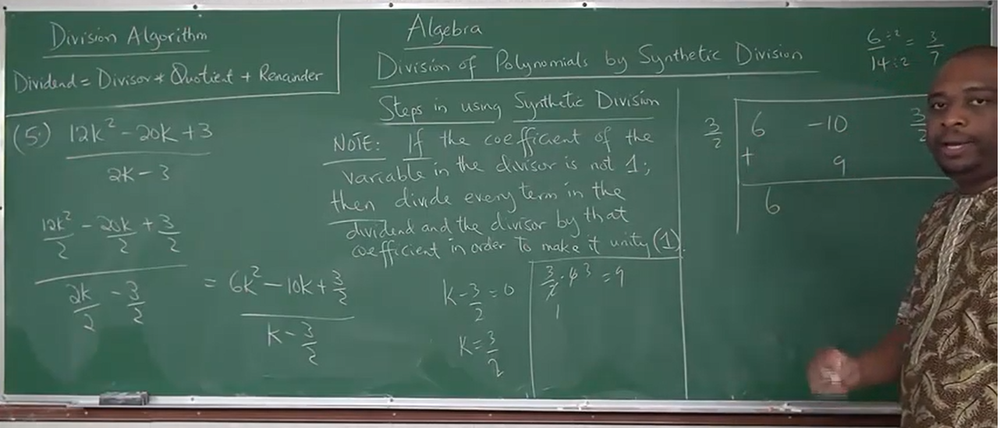
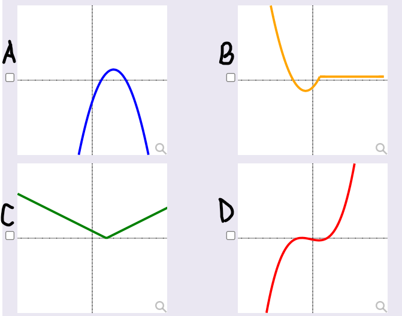
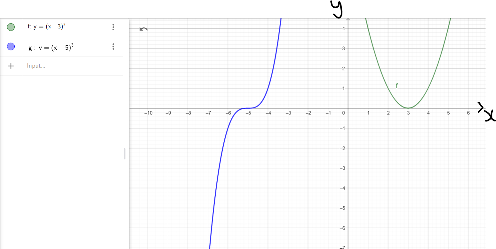
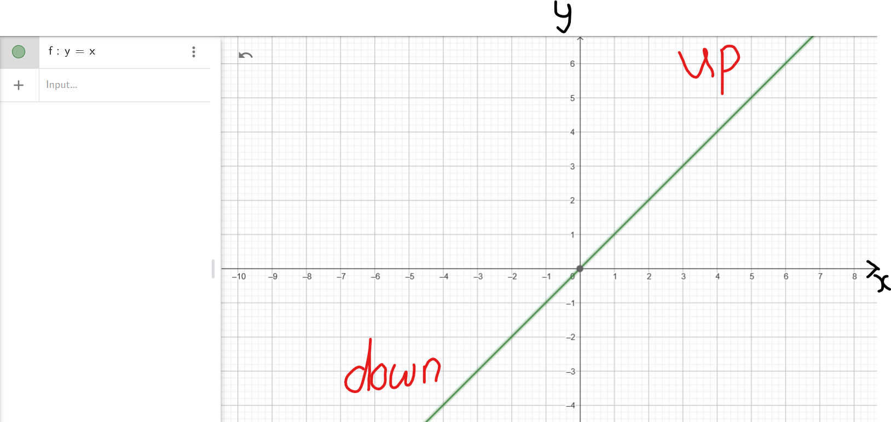
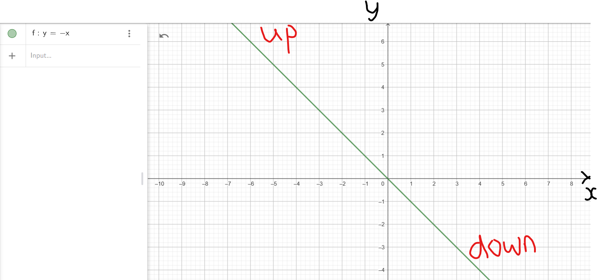
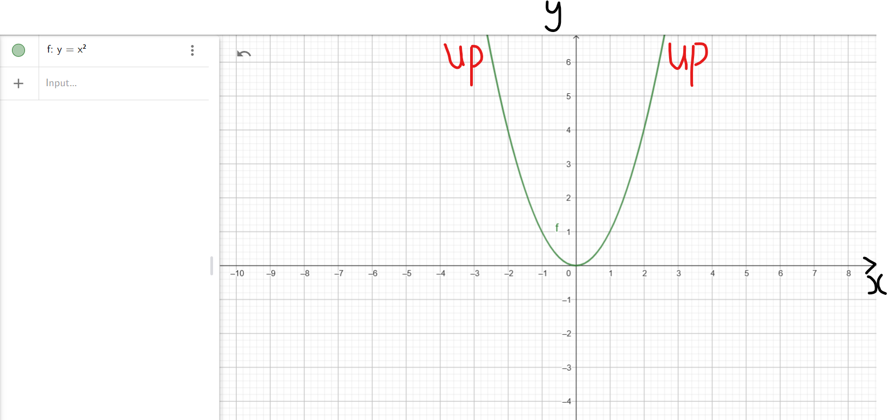
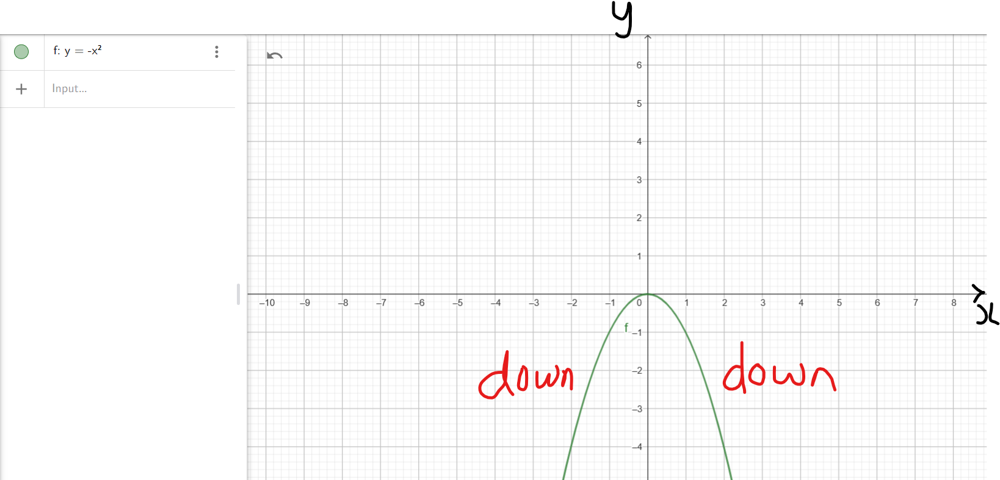

I greet you this day,
First: read the notes.
Second: view the videos.
Third: solve the questions/solved examples.
Fourth: check your solutions with my thoroughly-explained solutions.
Fifth: check your answers with the calculators as applicable.
Please use the latest internet browsers. The calculators should work.
The Wolfram Alpha widgets (many thanks to the developers) is used for the calculators.
Comments, ideas, areas of improvement, questions, and constructive criticisms are welcome. You may contact me.
If you are my student, please do not contact me here. Contact me via the school's system.
Thank you for visiting.
Samuel Dominic Chukwuemeka (Samdom For Peace) B.Eng., A.A.T, M.Ed., M.S
Students will:
(1.) Discuss polynomials.
(2.) Simplify polynomials.
(3.) Determine the domain of polynomial functions.
(4.) Determine the range of polynomial functions.
(5.) Evaluate polynomial functions for a given value.
(6.) Add polynomials.
(7.) Subtract polynomials.
(8.) Multiply polynomials.
(9.) Divide polynomials.
(10.) Discuss the Division Algorithm.
(11.) Check the solution of their division using the Division Algorithm.
(12.) Discuss the Remainder Theorem.
(13.) Discuss the Factor Theorem.
(14.) Factor polynomials.
(15.) Graph polynomial functions.
(16.) Determine the zeros of polynomial functions.
(17.) Determine the multiplicity of the zeros of polynomial functions.
(18.) Determine algebraically whether the graph of a polynomial function crosses or touches the x-axis.
(19.) Determine the intercepts of polynomial functions.
(20.) Determine the absolute extrema of polynomial functions.
(21.) Determine the relative extrema of polynomial functions.
(22.) Discuss the Rational Root Theorem.
(23.) Determine the end-behavior of the graphs of polynomial functions.
(24.) Analyze the graphs of polynomial functions.
(25.) Discuss the Descartes' Rule of Signs.
(26.) Solve polynomial problems using the TI-calculators series.
(27.) Solve polynomial problems using calculators.
(1.) Use of prior knowledge
(2.) Critical Thinking
(3.) Interdisciplinary connections/applications
(4.) Technology
(5.) Active participation through direct questioning
(6.) Research
Please note:
added to
subtracted from
multiplied by
divided by
Check for prior knowledge. Ask students about these terms.
Bring it to English: vary, constant, express, expression, equate, equal, equation,
equality, equanimity, equity, addendum
Bring it to Physics: Prefixes: mono or uni = $1$, di or bi = $2$, tri = $3$, tetra or quad = $4$, penta = $5$,
hexa = $6$, hepta = $7$, octa = $8$, nona = $9$, deca = $10$, hendeca = $11$, dodeca = $12$, etc.
Ask students to give examples of real-world scenarios where they have used any of the prefixes.
These include: unity, bilateral, triangle, tetrahedral, quadrilaterals (you can ask students to list examples of
quadrilaterals - Geometry!), etc.
Bring it to Math: arithmetic, arithmetic operators, algebra, polynomial functions, polynomials,
monomial, binomial, trinomial, quadrinomial, tetranomial, pentanomial, quintinomial, hexanomial, heptanomial,
octanomial, nonanomial, decanomial, sum, difference, product, quotient, type of polynomial, degree of polynomial,
Rational root theorem, root, solution, zeros, Descartes' Rule of signs, functions, linear functions,
quadratic functions, cubic functions, slope, intercepts, y-intercept, x-intercept, factoring techniques,
arithmetic operations, slope-intercept form, standard form, constant form, point-slope form, general form,
vertex, axis, line of symmetry, symmetry, long division, synthetic division, Remainder theorem,
Factor theorem, add, subtract, multiply, divide, augend, addend, minuend, subtrahend, multiplicand, multiplier,
dividend, divisor, sum, difference, product, quotient, division algorithm, cubic, quartic, exponent, index,
power, degree, order, quintic, pentic, hexic, sextic, heptic, septic, octic, nonic, decic, extrema, maxima, minima,
multiplicity of zeros, relative extrema, absolute extrema, relative maximum, relative minimum, absolute maximum,
absolute minimum, global extrema, local extrema, global minimum, global maximum, local minimum, local maximum,
domain, range, FOIL (First Outer Inner Last), box method, etc.
Generally, "linear" implies that the exponent of the variable is 1
"quadratic" implies that the exponent of the variable is 2
"cubic" implies that the exponent of the variable is 3
"quartic" implies that the exponent of the variable is 4
Some students may ask the reason for the discrepancy between "quadratic" and "quartic".
Please explain.
The basic arithmetic operators are the addition symbol, $+$, the subtraction symbol, $-$,
the multiplication symbol, $*$, and the division symbol, $\div$
Augend is the term that is being added to. It is the first term.
Addend is the term that is added. It is the second term.
Sum is the result of the addition.
$
For: \\[3ex]
3 + 7 = 10 \\[3ex]
3 = augend \\[3ex]
7 = addend \\[3ex]
10 = sum \\[3ex]
$
Minuend is the term that is being subtracted from. It is the first term.
Subtrahend is the term that is subtracted. It is the second term.
Difference is the result of the subtraction.
$
For: \\[3ex]
3 - 7 = -4 \\[3ex]
3 = minuend \\[3ex]
7 = subtrahend \\[3ex]
-4 = difference \\[3ex]
$
Multiplier is the term that is multiplied by. It is the first term.
Multiplicand is the term that is multiplied. It is the second term.
Product is the result of the multiplication.
$
For: \\[3ex]
3 * 10 = 30 \\[3ex]
3 = multiplier \\[3ex]
10 = multiplicand \\[3ex]
30 = product \\[3ex]
$
Dividend is the term that is being divided. It is the numerator.
Divisor is the term that is dividing. It is the denominator.
Quotient is the result of the division.
Remainder is the term remaining after the division.
$
For: \\[3ex]
12 \div 7 \\[3ex]
= 1\dfrac{5}{7} \\[5ex]
= 1 \:R\: 5 \\[3ex]
12 = dividend \\[3ex]
7 = divisor \\[3ex]
1 = quotient \\[3ex]
5 = remainder \\[3ex]
$
A constant is something that does not change. In mathematics, numbers are usually the constants.
A variable is something that varies (changes). In Mathematics, alphabets are usually the variables.
A function is a relation in which each input value has a unique output value.
The unique output value means that an input value cannot have two or more output values.
However, two or more input values can have the same output value.
A relation is a set of ordered pairs in which there each input value has at least one output value.
A linear function is a function in which the highest exponent of the independent variable in the function is $1$
A quadratic function is an function in which the highest exponent of the independent variable in the function is $2$
A cubic function is an function in which the highest exponent of the independent variable in the function is $3$
A quartic function is an function in which the highest exponent of the independent variable in the function is $4$
A polynomial is a function of variable(s) with only non-negative integer exponents.
We can also define it as:
A polynomial is a function:
that is a combination of constants and/or variables,
and in which the variable(s) do not have negative exponents or fractional exponents.
Simply put, the exponents are only non-negative integer exponents.
The coefficient(s) are constants but the variable(s) are non-negative integers only.
For a function to be a polynomial function,
the constants can have negative exponents or fractional exponents.
However, the variable(s) cannot have negative exponents or fractional exponents.
Students should give examples of each case to demonstrate understanding.
A polynomial is in standard form if it is written in descending order of exponents of the variable.
The degree of a polynomial is defined as the:
highest exponent of the variable (if the polynomial has only one variable) OR
the greater of: the highest exponent of the variable and the sum of the exponents of the variables (if the polynomial has several variables)
A polynomial of degree 1 is known as a linear polynomial.
A polynomial of degree 2 is known as a quadratic polynomial.
A polynomial of degree 3 is known as a cubic polynomial.
A polynomial of degree 4 is known as a quartic polynomial.
A polynomial of degree 5 is known as a quintic polynomial.
A polynomial of degree 6 is known as a hexic or sextic polynomial.
The type of a polynomial is defined as the number of terms in the polynomial.
A polynomial that has one term is known as a monomial.
A polynomial that has two terms is known as a binomial.
A polynomial that has three terms is known as a trinomial.
A polynomial that has four terms is known as a quadrinomial or tetranomial.
A polynomial that has five terms is known as a quintinomial or pentanomial.
A polynomial that has six terms is known as a hexanomial.
Please note these terms:
added to
subtracted from
multiplied by
divided by
A polynomial is a function of variable(s) with only non-negative integer exponents.
In other words, a polynomial has:
(1.) At least one variable.
(2.) The variable has at least one exponent.
(3.) The exponent must be a non-negative integer.
The standard form of a polynomial is: $f(x) = a_nx^n + a_{n - 1}x^{n - 1} + a_{n - 2}x^{n - 2} + ... + a_1x + a_0$
where:
$f(x)$ is the dependent variable (output)
$x$ is the independent variable (input)
$n$, $n - 1$, $n - 2$, are the exponents
$a_nx^n$ is the first term
$a_{n - 1}x^{n - 1}$ is the second term
$a_{n - 2}x^{n - 2}$ is the third term
$a_0$ is the last term
$a_n$, $a_{n - 1}$, $a_{n - 2}$, $a_1$ are the coefficients of the x-variable
A power function is a function of the form: $f(x) = a_n x^n$
where:
$f(x)$ is the dependent variable (output)
$x$ is the independent variable (input)
$n$ is the exponent
$a_n x_n$ is the term in the function
$a_n$ is the coefficient of the x-variable
$a$ and $n$ are real numbers.
However, for a polynomial, $n$ must be a non-negative integer. It cannot be any real number.
So, the main difference between a polynomial and a power function is a polynomial must have only non-negative integer
exponents while a power function can have any real-number exponent.
In this regard, we can also define a polynomial as the sum of several power functions having only non-negative
integer exponents.
Why Polynomials? How Did Polynomials Come Up?
Student: I know that an integer is a whole number including 0
But, what is a non-negative integer?
Teacher: Good question.
Is zero a positive or negative integer?
Student: Neither.
0 is used to separate the positive numbers from the negative numbers.
Teacher: Correct.
What if I wanted to include 0 with the positive integers?
What term do you think I should call it?
Student: I guess ...non-negative?
Teacher: That is right.
Non-negative integers are: zero and the positive integers: 0, 1, 2, 3, 4, ..., ∞
Student: So, the difference between a positive integer and a non-negative integer is that
A positive integer does not include 0 but a non-negative integer includes 0
Teacher: That is correct.
I would say it this way: that the non-negative integer includes 0 and the positive integer while the
positive integer does not include 0.
I would emphasize that non-negative integers includes zero and positive integers.
In that same sense...
The difference between negative integers and non-positive integers is:
Student: Negative integers contain only negative numbers (without zero) but Non-positive integers
includes zero and the negative integers.
Teacher: Correct.
Student: How did Polynomials come up?
Teacher: Mathematicians wanted to study functions that have variables with exponents that are non-negative
integers only.
They wanted to study the characteristics of those kind of functions...functions with exponents that are either
zero or positive...no negative exponents (inverse functions), no fractional exponents (radical functions),
no exponents with variables (such as exponential functions), no other kinds of functions such as trigonometric
functions, logarithmic functions, absolute value functions, etc.
Just functions with simple integer exponents...
That leads to the study of Polynomials
Those kind of functions (functions of variables with non-negative integer exponents) are Polynomial Functions or
just Polynomials.
Let us begin. 😊
A polynomial is said to be in standard form if it is written in
descending order of exponents of the variable.
When a polynomial is written in standard form, the leading term of the polynomial is usually
the first nonzero term with the variable. It is the term with the highest exponent of the variable.
The constant term is the term without the variable.
Example 1:
One of these polynomials is written in standard form.
Which one?
$
A.\;\; f(p) = 3 - 2p^2 + 5p \\[3ex]
B.\;\; f(p) = 5p - 2p^2 + 3 \\[3ex]
C.\;\; f(p) = -2p^2 + 5p + 3 \\[3ex]
D.\;\; f(p) = 5p + 3 - 2p^2 \\[3ex]
E.\;\; f(p) = -2p^2 + 3 + 5p \\[3ex]
F.\;\; f(p) = 3 + 5p - 2p^2
$
A polynomial can have one or more variables.
If the polynomial has only one variable, the degree of the polynomial is the
highest exponent of the variable.
If the polynomial has more than one variable, the degree of the polynomial is
the greater of: the highest exponent of the variable and the sum of the exponents of the variables.
The type of a polynomial is the number of terms in the polynomial.
After reviewing these terms in the Definition and Introduction sections of the topic, it is important to check your
understanding.
Example 2:
(1.) Please indicate whether each function in the table below is a polynomial or not.
If it is not a polynomial, please state so and move to the next question where applicable.
If it is a polynomial, please state:
(2.) the number of variable(s) and the variable(s) in the polynomial.
(3.) whether it is written in standard form. If it is not in standard form, write it in standard form.
(4.) the type and degree of the polynomial.
(5.) the leading term.
(6.) the leading coefficient.
(7.) the constant term as applicable.
Hint:
(1.) Does the function/expression have a variable?
OR
Can the function/expression be expressed as a variable?
Keep in mind that any constant can be expressed as a variable by including the variable with it and raising that
variable to exponent zero...Law 3...Exp
(2.) Does the variable have any exponent?
Keep in mind that any variable has an exponent. If you do not see the exponent, it means the exponent is 1
...Law 4...Exp
(3.) Is the exponent a non-negative integer?
If any of the exponents is not a non-negative integer, then the function is not a polynomial.
| Function | Answers |
|---|---|
| (1.) $f(x) = 3x - 5$ | |
| (2.) $f(p) = 3p - 5 - 7p^2$ | |
| (3.) $-\dfrac{5}{12}y^3$ | |
| (4.) $f(x) = -\dfrac{5}{12x^3}$ | |
| (5.) $25k^2 - 100$ | |
| (6.) $f(a) = -6a^5 + 12a^4 - 9a^3$ | |
| (7.) $7$ | |
| (8.) $6a^3 - 9a^2 - 2a + 3$ | |
| (9.) $f(d, p) = -12p - 45d$ | |
| (10.) $9p^2 + 27p^3 - 18p^4$ | |
| (11.) $a^{3x} - 26a^{2x} + 156a^x - 216$ | |
| (12.) $f(m) = 2m - 5 + \sqrt{7}m^3 - \dfrac{1}{4}m^2 + m^5$ | |
| (13.) $f(y) = y$ | |
| (14.) $f(y) = \dfrac{1}{y}$ | |
| (15.) $f(x, y) = x^2 - xy + y^2$ | |
| (16.) $f(x, y) = x^2 - xy^2 + y^2$ | |
| (17.) $f(x, y) = x^4 - xy^2 + y^2$ | |
| (18.) $c + d + e$ | |
| (19.) $f(x) = 3x^{-2} + 5x^{-1} - 7$ | |
| (20.) $f(x) = 7\sqrt{x} - 9$ | |
| (21.) $f(x) = \sqrt{7}x - 9$ | |
| (22.) 1 | |
| (23.) $f(x) = 7x^7 - \pi x^6 + \dfrac{1}{4}$ | |
| (24.) $f(x) = \dfrac{4 - x^3}{3}$ |
Given:
(1.) A polynomial with a variable
(2.) A value (constant or variable)
To Evaluate: the polynomial at that value
We substitute the variable in the polynomial with the given value.
This means that whenever you see the variable in the polynomial, replace it with the given value and simplify.
Please note that the given value can be a constant or a variable.
Example 1:
Work students through the addition and subtraction of variables.
Use real-world examples.
Let them know that the reasoning/thought process discussed below applies to addition and subtraction.
It's a different reasoning when we discuss multiplication.
Recall:
2 cups + 3 cups = 5 cups
Let cup = c
This implies that:
2c + 3c = 5c
What about 2 cups + 3 pens?
2 cups + 3 pens = 2 cups + 3 pens because a cup is different from a pen.
Technically, we can say that: 2 cups + 3 pens = 5 items
However, that is not our goal.
Our goal is to add or subtract same thing(s) to give us same thing(s).
We cannot add or subtract different things.
So:
2c + 3p = 2c + 3p
What about 2 cups + 3?
Teacher: Samuel, can you give me 3?
Samuel: 3 what?
Teacher: Notice how you said 3 what? what? what?
Notice the importance of including units to physical quantities.
Did you notice that 3 could mean several things?
It could mean $3 or 3 cups or 3 pens or 3 computers or 3 colleges or 3 universities, etc.
Hence, we cannot add 3 to 2 cups.
If it was 3 cups, then we can add it to 2 cups to give 5 cups.
However, because we are not sure of the 3, we cannot add it to 2 cups.
Therefore, 2 cups + 3 still gives us 2 cups + 3
Use this moment to teach students the importance of writing units for measurements.
To add polynomials:
(1.) Apply the Distributive Property to each polynomial as applicable.
(2.) Ensure that the polynomials are in standard form
If any of them is not in standard form, write it in standard form.
(3.) If you use the Vertical Method to add the polynomials, complete any missing term and include zero as the
coefficient of that missing term.
(4.) Count the number of terms to make sure you did not miss/skip any term.
(5.) Add the terms with same exponents
In other words, add like terms
(6.) Write the sum and any remaining terms.
(7.) Put the final answer in standard form.
We can use the Horizontal Method or the Vertical Method to add polynomials.
Use any method you prefer.
Example 1: Simplify: $(7x^3 - x^2 - 3x - 7) + (6x^3 - 2x^2 + 4x + 3)$
Solution 1:
Both polynomials are in standard form.
$
\underline{Horizontal\;\;Method} \\[3ex]
(7x^3 - x^2 - 3x - 7) + (6x^3 - 2x^2 + 4x + 3) \\[3ex]
= 1(7x^3 - x^2 - 3x - 7) + 1(6x^3 - 2x^2 + 4x + 3) \\[3ex]
= 7x^3 - x^2 - 3x - 7 + 6x^3 - 2x^2 + 4x + 3 \\[3ex]
= 7x^3 + 6x^3 - x^2 - 2x^2 - 3x + 4x - 7 + 3 \\[3ex]
= 13x^3 - 3x^2 + x - 4 \\[5ex]
\underline{Vertical\;\;Method} \\[3ex]
\begin{array}{c}
7x^3 - x^2 - 3x - 7 \\
+\hspace{9em} \\
6x^3 - 2x^2 + 4x + 3 \\
\hline
13x^3 - 3x^2 + x - 4 \\
\hline
\end{array}
$
Example 2: Add the polynomials: $(x^2 - 6x^5 - 12 + 3x)$ and $(6x^3 + x^2 - 8 + 3x^4)$
Solution 2:
Both polynomials are not in standard form.
Let us put each of them in standard form.
Add the polynomials: $(-6x^5 + x^2 + 3x - 12) + (3x^4 + 6x^3 + x^2 - 8)$
$
\underline{Horizontal\;\;Method} \\[3ex]
(-6x^5 + x^2 + 3x - 12) + (3x^4 + 6x^3 + x^2 - 8) \\[3ex]
= 1(-6x^5 + x^2 + 3x - 12) + 1(3x^4 + 6x^3 + x^2 - 8) \\[3ex]
= -6x^5 + x^2 + 3x - 12 + 3x^4 + 6x^3 + x^2 - 8 \\[3ex]
= -6x^5 + 3x^4 + 6x^3 + x^2 + x^2 + 3x - 12 - 8 \\[3ex]
= -6x^5 + 3x^4 + 6x^3 + 2x^2 + 3x - 20 \\[5ex]
$
To use the Vertical Method, it is highly recommended we complete both polynomials.
This means that we have to include any missing term with 0 as the coefficient.
$
\underline{Vertical\;\;Method} \\[3ex]
\begin{array}{c}
-6x^5 + 0x^4 + 0x^3 + x^2 + 3x - 12 \\
+\hspace{16em} \\
0x^5 + 3x^4 + 6x^3 + x^2 + 0x - 8 \\
\hline
-6x^5 + 3x^4 + 6x^3 + 2x^2 + 3x - 20 \\
\hline
\end{array}
$
Example 3: Determine the sum of the polynomials: $-3(7p - p^3 + 12p^2)$ and $-5(-8 - 9p^2 + 2p^4 - p)$
Solution 3:
First Step: The Distributive Property is applicable to each of them.
So, let us distribute −3 to the first polynomial and distribute −5 to the second polynomial.
This gives us:
$-21p + 3p^3 - 36p^2$ and $40 + 45p^2 - 10p^4 + 5p$
Both polynomials are not in standard form.
Second Step: Let us put each of them in standard form.
Add the polynomials: $3p^3 - 36p^2 - 21p$ and $-10p^4 + 45p^2 + 5p + 40$
$
\underline{Horizontal\;\;Method} \\[3ex]
(3p^3 - 36p^2 - 21p) + (-10p^4 + 45p^2 + 5p + 40) \\[3ex]
1(3p^3 - 36p^2 - 21p) + 1(-10p^4 + 45p^2 + 5p + 40) \\[3ex]
= 3p^3 - 36p^2 - 21p - 10p^4 + 45p^2 + 5p + 40 \\[3ex]
= -10p^4 + 3p^3 - 36p^2 + 45p^2 - 21p + 5p + 40 \\[3ex]
= -10p^4 + 3p^3 + 9p^2 - 16p + 40 \\[5ex]
$
To use the Vertical Method, it is highly recommended we complete both polynomials.
This means that we have to include any missing term with 0 as the coefficient.
$
\underline{Vertical\;\;Method} \\[3ex]
\begin{array}{c}
0p^4 + 3p^3 - 36p^2 - 21p + 0 \\
+\hspace{16em} \\
-10p^4 + 0p^3 + 45p^2 + 5p + 40 \\
\hline
-10p^4 + 3p^3 + 9p^2 - 16p + 40 \\
\hline
\end{array}
$
Subtraction of Polynomials
The same principles we used in the addition of polynomials also apply to the subtraction of polynomials.
To subtract polynomials:
(1.) Apply the Distributive Property to each polynomial as applicable.
(2.) Ensure that the polynomials are in standard form
If any of them is not in standard form, write it in standard form.
(3.) If you use the Vertical Method to subtract the polynomials, complete any missing term and include zero as the
coefficient of that missing term.
(4.) Count the number of terms to make sure you did not miss/skip any term.
(5.) Subtract the terms with same exponents
In other words, subtract like terms
(6.) Write the difference and any remaining terms.
(7.) Put the final answer in standard form.
We can use the Horizontal Method or the Vertical Method to subtract polynomials.
Use any method you prefer.
Example 4: Evaluate: $(7x^3 - x^2 - 3x - 7) - (6x^3 - 2x^2 + 4x + 3)$
Solution 4:
Both polynomials are in standard form.
$
\underline{Horizontal\;\;Method} \\[3ex]
(7x^3 - x^2 - 3x - 7) - (6x^3 - 2x^2 + 4x + 3) \\[3ex]
= 1(7x^3 - x^2 - 3x - 7) - 1(6x^3 - 2x^2 + 4x + 3) \\[3ex]
= 7x^3 - x^2 - 3x - 7 - 6x^3 + 2x^2 - 4x - 3 \\[3ex]
= 7x^3 - 6x^3 - x^2 + 2x^2 - 3x - 4x - 7 - 3 \\[3ex]
= x^3 + x^2 - 7x - 10 \\[5ex]
\underline{Vertical\;\;Method} \\[3ex]
\begin{array}{c}
7x^3 - x^2 - 3x - 7 \\
-\hspace{9em} \\
6x^3 - 2x^2 + 4x + 3 \\
\hline
x^3 + x^2 - 7x - 10 \\
\hline
\end{array}
$
Example 5: Find the difference between the polynomials: $(x^2 - 6x^5 - 12 + 3x)$ and $(6x^3 + x^2 - 8 + 3x^4)$
Solution 5:
Both polynomials are not in standard form.
Let us put each of them in standard form and subtract them, so we can find the difference.
$(-6x^5 + x^2 + 3x - 12) - (3x^4 + 6x^3 + x^2 - 8)$
$
\underline{Horizontal\;\;Method} \\[3ex]
(-6x^5 + x^2 + 3x - 12) - (3x^4 + 6x^3 + x^2 - 8) \\[3ex]
= 1(-6x^5 + x^2 + 3x - 12) - 1(3x^4 + 6x^3 + x^2 - 8) \\[3ex]
= -6x^5 + x^2 + 3x - 12 - 3x^4 - 6x^3 - x^2 + 8 \\[3ex]
= -6x^5 - 3x^4 - 6x^3 + x^2 - x^2 + 3x - 12 + 8 \\[3ex]
= -6x^5 - 3x^4 - 6x^3 + 3x - 4 \\[5ex]
$
To use the Vertical Method, it is highly recommended we complete both polynomials.
This means that we have to include any missing term with 0 as the coefficient.
$
\underline{Vertical\;\;Method} \\[3ex]
\begin{array}{c}
-6x^5 + 0x^4 + 0x^3 + x^2 + 3x - 12 \\
-\hspace{16em} \\
0x^5 + 3x^4 + 6x^3 + x^2 + 0x - 8 \\
\hline
-6x^5 - 3x^4 - 6x^3 + 0x^2 + 3x - 4 \\
\hline
\end{array} \\[3ex]
Answer = -6x^5 - 3x^4 - 6x^3 + 3x - 4
$
Example 6: Subtract $-5(-8 - 9p^2 + 2p^4 - p)$ from $-3(7p - p^3 + 12p^2)$
This implies: $-3(7p - p^3 + 12p^2) - -5(-8 - 9p^2 + 2p^4 - p)$
Solution 6:
We can use at least two methods (Horizontal Method and Vertical Method) to do this question in two different ways
(First Approach and Second Approach).
Choose whatever method and whatever approach you prefer.
(a.) First Approach:
Use the fact that the two negatives make a positive,
distribute −3 to the first polynomial
distribute 5 to the second polynomial
add the two results to get the final answer.
(b.) Second Approach:
distribute −3 to the first polynomial and −5 to the second polynomials
subtract the two results to get the final answer.
$
\underline{Horizontal\;\;Method\;\;and\;\;First\;\;Approach} \\[3ex]
-3(7p - p^3 + 12p^2) - -5(-8 - 9p^2 + 2p^4 - p) \\[3ex]
= -3(7p - p^3 + 12p^2) + 5(-8 - 9p^2 + 2p^4 - p) \\[3ex]
= -21p + 3p^3 - 36p^2 - 40 - 45p^2 + 10p^4 - 5p \\[3ex]
= -21p + 3p^3 - 36p^2 - 40 - 45p^2 + 10p^4 - 5p \\[3ex]
= 10p^4 + 3p^3 - 36p^2 - 45p^2 - 21p - 5p - 40 \\[3ex]
= 10p^4 + 3p^3 - 81p^2 - 26p - 40 \\[5ex]
\underline{Horizontal\;\;Method\;\;and\;\;Second\;\;Approach} \\[3ex]
-3(7p - p^3 + 12p^2) - -5(-8 - 9p^2 + 2p^4 - p) \\[3ex]
= -21p + 3p^3 - 36p^2 - (40 + 45p^2 - 10p^4 + 5p) \\[3ex]
= -21p + 3p^3 - 36p^2 - 40 - 45p^2 + 10p^4 - 5p \\[3ex]
= 10p^4 + 3p^3 - 36p^2 - 45p^2 - 21p - 5p - 40 \\[3ex]
= 10p^4 + 3p^3 - 81p^2 - 26p - 40 \\[5ex]
For\;\;the\;\;Vertical\;\;Method: \\[3ex]
\underline{Distributive\;\;Property\;\;and\;\;Standard\;\;Form} \\[3ex]
-3(7p - p^3 + 12p^2) \\[3ex]
= -21p + 3p^3 - 36p^2 \\[3ex]
= 3p^3 - 36p^2 - 21p \\[5ex]
-5(-8 - 9p^2 + 2p^4 - p) \\[3ex]
= 40 + 45p^2 - 10p^4 + 5p \\[3ex]
= -10p^4 + 45p^2 + 5p + 40 \\[5ex]
5(-8 - 9p^2 + 2p^4 - p) \\[3ex]
= -40 - 45p^2 + 10p^4 - 5p \\[3ex]
= 10p^4 - 45p^2 - 5p - 40 \\[5ex]
\underline{Vertical\;\;Method\;\;and\;\;First\;\;Approach} \\[3ex]
\begin{array}{c}
0p^4 + 3p^3 - 36p^2 - 21p + 0 \\
+\hspace{16em} \\
10p^4 + 0p^3 - 45p^2 - 5p - 40 \\
\hline
10p^4 + 3p^3 - 81p^2 - 26p - 40 \\
\hline
\end{array}
$
$
\underline{Vertical\;\;Method\;\;and\;\;Second\;\;Approach} \\[3ex]
\begin{array}{c}
0p^4 + 3p^3 - 36p^2 - 21p + 0 \\
-\hspace{16em} \\
-10p^4 + 0p^3 + 45p^2 + 5p + 40 \\
\hline
10p^4 + 3p^3 - 81p^2 - 26p - 40 \\
\hline
\end{array}
$
Given: Two polynomials
To Find: The product
Multiplying Two Polynomials require that we multiply each term of one polynomial with
each term of the other polynomial
Student: What if we were given three polynomials and asked to find the product?
Teacher: Good question.
In that case, do it two at a time.
Multiply the first two.
Find the product.
Then, multiply the third with that product.
The same principle apply to the multiplication of many polynomials.
It is better to multiply two at a time.
Find the product. Use it to multiply the third.
Find the product. Use it to multiply the fourth.
and so on and so forth.
There are at least four methods that we can use to multiply two polynomials.
They are:
(1.) Direct Multiplication (Horizontal Method).
This is used to multiply any two polynomials.
It is better to write each multiplication
(multiplication of each term of the first polynomial with each term of the second polynomial) line-by-line.
In other words, do each multiplication on a new line
Then, combine all individual products to find the final product.
Some people prefer to write it horizontally on one line rather than multiple lines. But, I encourage you to write
in multiple lines if you prefer to use this method. Be it as it may, do what works best for you.
(2.) FOIL (First — Outer — Inner — Last) Method.
This method is used to multiply only two binomials.
It is similar to the Horizontal Method but in the sense that it is used for only two binomials.
We multiply the:
(a.) First: first term in the first binomial with the first term in the second binomial
(b.) Outer: first term in the first binomial with the second term in the second binomial
(c.) Inner: second term in the first binomial with the first term in the second binomial
(d.) Last: second term in the first binomial with the second term in the second binomial
(3.) Box Method.
This method is used to multiply any two polynomials.
We set it up in the form of a box with compartments, putting one polynomial as the length of the box and the other
polynomial as the width of the box.
We make sure to include the signs with the coefficients for each polynomial.
Each term of the polynomial takes up a space accordingly/respectively in the length and the width of the box.
The product of a term in the length and the corresponding term in the width is written in each compartment in
the box.
Unless asked otherwise, it is highly recommended that both polynomials are set in standard form before using this method.
(4.) Vertical Method.
To use this method, each polynomial must be written in standard form.
Recall how we multiplied numbers in the elementary school. How did we set it up? Vertically right?
Then, we set up the two polynomials vertically just as we set up the multiplication of two numbers in the elementary
school. 😊
We write the first polynomial on the first line, then write the multiplication symbol on the second line,
and the second polynomial on the third line.
We begin the multiplication from the back...multiplying the last term of the second polynomial with the last term
of the first polynomial.
Let us do some examples using each method.
Use any method you prefer.
Example 1:
Teacher: Factoring ...
Factors...
Break into factors ...
Factoring a polynomial is the breaking up of that polynomial into a product of factors
When we multiply those factors, we get back the polynomial.
Let me find an analogy for you.
You are a Computer Science major...right?
Student: Yes Sir
Teacher: Which is easier: Computer Assembly or Computer Disassembly
Student: In my opinion, I think Computer Disassembly
Teacher: In the sense of Computer Assembly and Computer Disassembly:
Multiplication is the Computer Assembly
Factoring is the Computer Disassembly
Do you like this analogy?
Student: Yes, it makes sense
Teacher: So, here's the thing
We have several factoring techniques
Compare it to the scenario where you ask someone to disassemble a computer
Someone may disconnect the keyboard first; another may disconnect the mouse first; and so on and so forth.
But the main goal is to disassemble the entire computer so you have only the parts.
We have several factoring techniques.
Some polynomials may involve one or more techniques.
But the end goal is to break up the polynomial into factors.
Just as when you assemble all the parts of the computer, you assemble the computer; when we multiply those
factors, we have our original polynomial
Is there something say a machine that you cannot disassemble?
Student: I guess...something like the fan belt of a car?
Teacher: Okay...
In the same sense, some polynomials cannot be factored.
Student: How do you know the polynomials that cannot be factored?
Teacher: Good question.
For binomials: if it is already in simplified form for example: 2x + 3; it cannot be simplified further.
If it is: 2x + 4, then we can factor by GCF (Greatest Common Factor)
Student: The common factor is 2
Teacher: Correct.
So, we bring out 2
Then we divide 2x by 2; it leaves us with x
We keep the positive sign
Then we divide 4 by 2 and that gives 2
So, we have
2x + 4 = 2(x + 2)
The two factors are: 2 and (x + 2)
If we multiply those two factors, it gives the binomial: 2x + 4
Student: Makes sense
Teacher: For trinomials: we shall discuss it in details when we discuss the technique
But if it is in the standard form and the second term is not a factor of: the product of the first term and the
third term, then that trinomial cannot be factored.
Well, it cannot be solved by Factoring
Let us discuss the factoring techniques and use them to factor polynomials.
Factoring a Polynomial is the breaking/splitting of the polynomial into a product of factors such
that the product of those factors gives the polynomial.
We use factoring techniques to factor polynomials.
Typically, the polynomial involves at least two terms (binomial, trinomial, tetranomial, and pentanomial among others).
The six basic factoring techniques are:
(1.) Factoring by GCF (Greatest Common Factor)
(2.) Factoring by Grouping
(3.) Factoring by the Difference of Two Squares
(4.) Factoring by the Sum of Two Cubes
(5.) Factoring by the Difference of Two Cubes
(6.) Factoring Quadratic Trinomials, Quartic Trinomials, and Hexic Trinomials and the Likes
Student: What about the Sum of Two Squares?
Do we have it?
Teacher: Good observation.
We do not have it.
Do you know why?
Student: No Sir
Why is it missing?
Teacher: Let's discuss (3.), (4.), and (5.)
Then, you will find out why and let me know.
Student: What if I did not figure it out?
Teacher: Then, I'll let you know. 😊
Let's head on to the first one...
Factoring by GCF (Greatest Common Factor) means that we should find the GCF first, and then use it to factor the
polynomial.
The Greatest Common Factor (GCF):
Is also known as the as Greatest Common Divisor (GCD), the HCF (Highest Common Factor), or GCM (Greatest Common
Measure)
This means that it is a factor of two or more integers.
It is a divisor of two or more integers.
This means that it can divide two or more integers without a remainder.
It is a common factor of two or more integers.
It is the greatest common factor of two or more integers.
There may be other common factors of two or more integers. However, we are interested in the greatest of those
factors.
Greatest Common Factor is defined as the greatest positive integer that can divide a set of integers
without a remainder.
NOTE:
(I.) 1 is a common factor of every two integers.
(II.) If you have a leading negative, factor out the negative first.
There are at least five methods of calculating the GCF of two or more positive integers.
They are:
(1.) Listing Method: can calculate the GCF of two or more integers.
This is the simplest method.
However, it is cumbersome especially for a set of big integers.
(2.) "Nigerian" Method (hmmm... I learnt this method in the elementary school in Nigeria.
I have forgotten the name of the method. It works!): can calculate the $gcd$ of two or more positive integers.
This method is not recommended for a set of big positive integers.
(3.) Prime Factorization Method: can calculate the GCF of two or more positive integers.
This method is moderate for a set of big positive integers.
(4.) Euclidean Algorithm Method: can calculate the GCF of two positive integers.
This method is recommended for a set of two integers however small or big.
We shall not be discussing this method because it is not included in the curriculum for Algebra
It is for Discrete Mathematics and Computer Science majors.
(5.) Extended Euclidean Algorithm Method: can calculate the GCF of two positive integers.
This method is recommended for a set of two integers however small or big.
We shall not be discussing this method because it is not included in the curriculum for Algebra
It is for Discrete Mathematics and Computer Science majors.
Ask students if they can come up with their own methods after they learn all the five methods. Encourage them to do so.
Emphasize the importance of life-long learning.
Briefly discuss the discoveries made by other humans which are beneficial to them. So, why not discover something that will be beneficial to others?
We shall discuss the first three methods in this website.
(1.) Listing Method
In this method; we list all the factors of each integer.
We write the common factors of all of them.
Then, we find the greatest common factor of all of them.
An advice:
Begin with 1, and continue listing the factors in ascending order (from least to greatest).
1 is a factor of every integer.
Then; as you write any small factor, write theother factor as well (in a separate place).
That way, you would not forget any factor(s).
(a.) Calculate the GCF of 12 and 18
Factors of 12 = 1, 2, 3, 4, 6, 12
Factors of 18 = 1, 2, 3, 6, 9, 18
Common Factors of 12 and 18 = 1, 2, 3, 6
Highest Common Factor of 12 and 18 = 6
GCF(12, 18) = 6
(b.) Calculate the gcd of 30 and 105
Divisors of 30 = 1, 2, 3, 5, 6, 10, 15, 30
Divisors of 105 = 1, 3, 5, 7, 15, 21, 35, 105
Common Divisors of 30 and 105 = 1, 3, 5, 15
Greatest Common Divisor of 30 and 105 = 15
GCF(30, 105) = 15
(c.) Calculate the gcf of 13k² and 52
Divisors of 13k² = 1k, 13k, 1k², 13k²
Divisors of 52 = 1, 2, 4, 13
Common Divisors of 13k² and 52 = 13
Greatest Common Divisor of 13k² and 52 = 13
GCF(13k² and 52) = 13
Factoring by Grouping typically involves the grouping of the polynomial in twos (or binomials) so that each binomial
can be factored by GCF and be factored again by GCF.
This means that Factoring by Grouping typically involves Factoring by GCF twice.
When do we use Factoring by Grouping?
(1.) If the number of terms in the polynomial is even such as: polynomials of four terms, six terms, eight terms,
ten terms, etc.
(2.) If there is some common factor between the group of twos, group of threes, group of fours, etc.
If the polynomial is a tetranomial (four terms), try to see if each of a group of two terms have common factors.
If it does, then most likely, we group in twos so we can factor by GCF
We can use the Vertical Approach or the Horizontal Approach.
Let us look at an example.
Example 1: If $p(m, x, y) = mx - 2x + my - 2y$, factor $p(m, x, y)$
$
f(m, x, y) = mx - 2x + my - 2y \\[3ex]
Group\;\;in\;\;twos \\[3ex]
\underline{Vertical\;\;Approach} \\[3ex]
mx - 2x = x(m - 2) \\[3ex]
my - 2y = y(m - 2) \\[3ex]
GCF = (m - 2) \\[3ex]
\therefore f(m, x, y) = (m - 2)(x + y) \\[5ex]
\underline{Horizontal\;\;Approach} \\[3ex]
mx - 2x + my - 2y \\[3ex]
x(m - 2) + y(m - 2) \\[3ex]
GCF = (m - 2) \\[3ex]
\therefore f(m, x, y) = (m - 2)(x + y) \\[5ex]
\underline{Check} \\[3ex]
Multiply\;\;the\;\;two\;\;binomials \\[3ex]
(m - 2)(x + y) \\[3ex]
mx + my - 2x - 2y \\[3ex]
f(m, x, y) = mx - 2x + my - 2y \\[3ex]
$
Sometimes, we may need to arrange the terms in the polynomial before we group them.
Here is another example.
Example 2: Factor the polynomial: $f(x, y) = 3y^2 + 2x - xy - 6y$
$
f(x, y) = 3y^2 + 2x - xy - 6y \\[3ex]
Rearrange \\[3ex]
f(x, y) = 3y^2 - xy - 6y + 2x \\[3ex]
Group\;\;in\;\;twos \\[3ex]
\underline{Vertical\;\;Approach} \\[3ex]
3y^2 - xy = y(3y - x) \\[3ex]
-6y + 2x = -2(3y - x) \\[3ex]
GCF = (3y - x) \\[3ex]
\therefore f(x, y) = (3y - x)(y - 2) \\[5ex]
\underline{Horizontal\;\;Approach} \\[3ex]
3y^2 - xy - 6y + 2x \\[3ex]
y(3y - x) - 2(3y - x) \\[3ex]
GCF = (3y - x) \\[3ex]
\therefore f(x, y) = (3y - x)(y - 2) \\[5ex]
\underline{Check} \\[3ex]
Multiply\;\;the\;\;two\;\;binomials \\[3ex]
(3y - x)(y - 2) \\[3ex]
3y^2 - 6y - xy + 2x \\[3ex]
\therefore f(x, y) = 3y^2 - xy - 6y + 2x \\[3ex]
$
If the polynomial has six terms and if each of the group of two terms have common factors, we can group in twos and
factor by GCF.
If the polynomial has six terms and if each of the group of three terms have common factors, we can group in threes and
factor by GCF.
...and so on and so forth.
Before we discuss this factoring technique, let us do some review of Arithmetic.
Arithmetic
Recall: the Order of Operations: PEMDAS (or BPEMDAS in some cases)
Example 1: Evaluate 5² − 2²
$
\underline{1st\;\;Method:\;\;PEMDAS} \\[3ex]
5^2 - 2^2 \\[3ex]
= 25 - 4 \\[3ex]
= 21 \\[3ex]
$
But, mathematicians wondered how we could use PEMDAS for algebraic expressions
Notice that it's straightforward to use with arithmetic expressions.
But, how can we evaluate or simplify algebraic expressions such as: x² − y² ?
Here comes the Difference of Two Squares
$
\underline{2nd\;\;Method:\;\;Difference\;\;of\;\;Two\;\;Squares} \\[3ex]
5^2 - 2^2 \\[3ex]
= (5 + 2)(5 - 2) \\[3ex]
= 7 * 3 \\[3ex]
= 21 \\[3ex]
$
The advantage of using the Difference of Two Squares is that it can be applied to both arithmetic expressions and
algebraic expressions.
As you may have noticed:
(1.) It involves only two terms (Two)
(2.) Each term is a square, or can be expressed as a square of some other term (Two Squares)
(3.) It is a difference, because of the minus sign between two terms (Difference of Two Terms)
The result of the Difference of Two Squares is the product of: the sum and the difference of the terms
(without the squares).
Depending on the class mood, sing the song regarding the Difference of Two Squares
The Difference of Two Squares is the Product of their Sum and their Difference.
Applying it to algebraic expressions, we have:
$
\boldsymbol{x^2 - y^2 = (x + y)(x - y)} \\[3ex]
$
Factoring by the Difference of Two Squares is the factoring of any polynomial that can be expressed as:
(a.) a binomial
(b.) the binomial is a difference of terms (a difference between the first term and the second term)
(c.) each term in the binomial must be expressed as a square
When the single binomial whose terms are quadratic (squares) is factored using the Difference of Two Squares,
the result becones the product of two binomials whose terms are linear.
Example 2: Factor the polynomial: $f(x, y) = 16x^2 - 81y^2$
$
16x^2 - 81y^2 \\[3ex]
4^2x^2 - 9^2y^2 \\[3ex]
(4x)^2 - (9y)^2 \\[3ex]
$
NOTE: Each term must be expressed as a square.
Notice how we expressed 16x² as (4x)²
Notice how we expressed 81y² as (7y)²
Each entity must be a square
Once this is done, we can compare it to the formula and then factor it
$
Compare\;\;to:\;\; x^2 - y^2 = (x + y)(x - y) \\[3ex]
x = 4x \\[3ex]
y = 9y \\[3ex]
\implies \\[3ex]
(4x + 9y)(4x - 9y) \\[3ex]
\therefore 16x^2 - 81y^2 = (4x + 9y)(4x - 9y) \\[3ex]
\underline{Check} \\[3ex]
(4x + 9y)(4x - 9y) \\[3ex]
16x^2 - 36xy + 36xy - 81y^2 \\[3ex]
16x^2 - 81y^2
$
Ask students to define Factoring by the Sum of Two Cubes using the same analogy that we discussed in the
Difference of Two Squares.
We are trying to find the result of x³ + y³
Factoring by the Sum of Two Cubes is the factoring of any polynomial that can be expressed as:
(a.) a binomial
(b.) the binomial is a sum of terms (a sum of the first term and the second term)
(c.) each term in the binomial must be expressed as a cube
Let us begin by expanding (x + y)³ and see where it leads us to.
$
(x + y)^3 \\[3ex]
= (x + y)(x + y)(x + y) \\[3ex]
= (x + y)(x^2 + xy + xy + y^2) \\[3ex]
= (x + y)(x^2 + 2xy + y^2) \\[3ex]
= x^3 + 2x^2y + xy^2 + x^2y + 2xy^2 + y^3 \\[3ex]
= x^3 + 3x^2y + 3xy^2 + y^3 \\[3ex]
\implies \\[3ex]
(x + y)^3 = x^3 + 3x^2y + 3xy^2 + y^3 \\[3ex]
$
Let us now find the formula for x³ + y³
$
Swap\;\;(RHS = LHS;\;\;LHS = RHS) \\[3ex]
x^3 + 3x^2y + 3xy^2 + y^3 = (x + y)^3 \\[3ex]
x^3 + y^3 = (x + y)^3 - 3x^2y - 3xy^2 \\[3ex]
= (x + y)^3 - 3xy(x + y) \\[3ex]
= (x + y)[(x + y)^2 - 3xy] \\[3ex]
= (x + y)[(x + y)(x + y) - 3xy] \\[3ex]
= (x + y)(x^2 + xy + xy + y^2 - 3xy) \\[3ex]
= (x + y)(x^2 - xy + y^2) \\[3ex]
\therefore x^3 + y^3 = (x + y)(x^2 - xy + y^2) \\[3ex]
$
Based on what we did in the Factoring by the Sum of Two Cubes, ask students to:
(a.) define Factoring by the Difference of Two Cubes
(b.) derive the formula for the Difference of Two Cubes.
Recall: the Multiplication of Two Binomials
Ask students to multiply $(x + 3)(x + 5)$
They can use any method they like: FOIL Method, Vertical Method, Horizontal Method, or
the Box Method
$
(x + 3)(x + 5) \\[3ex]
x(x) = x^2 \\[3ex]
x(5) = 5x \\[3ex]
3(x) = 3x \\[3ex]
3(5) = 15 \\[3ex]
= x^2 + 5x + 3x + 15 \\[3ex]
= x^2 + 8x + 15 \\[3ex]
$
So; Given: two binomials
We multiply the two binomials and we get a trinomial
This is Multiplying
Assume we were given the trinomial
What can we do to the trinomial in order to get the two binomials?
This is Factoring
Discuss comparisons of Multiply and Factor with:
Join and Split
Assemble and Disassemble
Build up and Tear apart
Given: the general form/standard form of a Quadratic Trinomial: $ax^2 + bx + c$;
$Discriminant = b^2 - 4ac$
The Discriminant:
(1.) tells us whether the quadratic trinomial can be factored or not.
(2.) tells us the nature of the roots of a quadratic equation.
How Do We Know if a Trinomial Can be Factored?
(1.) Calculate the discriminant.
If the discriminant is a perfect square, the trinomial can be factored
If the discriminant is not a perfect square, the trinomial cannot be factored
If the trinomial cannot be factored, it is said to be prime.
What Information Does the Discriminant Provide About the Nature of Roots?
(1.) If the discriminant is positive, the quadratic equation has $2$ real roots.
(1a.) If the discriminant is positive ($b^2 - 4ac \gt 0$) and is a perfect square:
the quadratic trinomial can be factored
the two binomials (got from the factoring) are not repeated
there are two x-intercepts on the graph of the trinomial.
(1b.) If the discriminant is positive ($b^2 - 4ac \gt 0$) and is not a perfect square:
the quadratic trinomial cannot be factored;
the quadratic trinomial is prime
there are two x-intercepts on the graph of the trinomial.
(2.) If the discriminant is zero ($b^2 - 4ac = 0$):
the quadratic trinomial can be factored
the two binomials (got from the factoring) are repeated
there is only one x-intercept on the graph of the trinomial.
(3.) If the discriminant is negative ($b^2 - 4ac \lt 0$):
the quadratic trinomial cannot be factored;
the quadratic trinomial is prime
there are no x-intercepts on the graph of the trinomial.
Given: the general form/standard form of a Quadratic Trinomial: $ax^2 + bx + c$;
First term = $ax^2$
Second term = $bx$
Third term = $c$
Coefficient of $x^2 = a$
Coefficient of $x = b$
Factoring Quadratic Trinomials
To factor a quadratic trinomial;
(1.) Make sure it is in the standard form.
(2.) If the coefficient of $x^2$ is negative, factor out the negative.
This means that if $a$ is negative, factor out the negative.
We always want $a$ to be positive.
*(3.) If the coefficient of $x^2$ is one, find two factors of the third term such that the
sum of those two factors gives the coefficient of the second term.
This means that if $a = 1$, find two factors of $c$ such that the sum of two factors gives $b$.
Then, write those factors as $(x ... ...)(x ... ...)$
Jump to Step (8.)
(4.) Multiply the first and third terms.
$ax^2 * c = acx^2$
(5.) Find two factors of the product (in Step 4.) such that the sum of those two factors
gives the second term.
(6.) Replace the second term with those two factors.
(7.) Factor by Grouping.
As you factor by Grouping; if you see any leading negative, factor out the negative first.
(8.) Check your work. Multiply the two binomials. It should give you the "original quadratic trinomial".
If it does not give you the "original quadratic trinomial", fix your mistake, re-solve and re-check
until you get it correct.
*Step (3.) can be skipped. However, if you are taking a "timed" test, and if
$a = 1$, you want to save time by doing it right away.
*See the second method used in Question (15.)*
The Nice Thing About This Method
This method is not only used for Quadratic Trinomial: $ax^2 + bx + c$
This method is also used for:
(1.) Quartic Trinomials such as:
$
ax^4 + bx^2 + c \\[3ex]
where \\[3ex]
x \:\:is\:\:the\:\:variable \\[3ex]
a, b, c \:\:are\:\:the\:\:constants \\[3ex]
$
(2.) Hexic Trinomials and Higher Order Trinomials such as:
$
ax^6 + bx^3 + c \\[3ex]
where \\[3ex]
x \:\:is\:\:the\:\:variable \\[3ex]
a, b, c \:\:are\:\:the\:\:constants \\[3ex]
$
(3.) Multivariable Quadratic Trinomials such as:
$
ax^2 + bxy + cy^2 \\[3ex]
where \\[3ex]
x, y \:\:are\:\:the\:\:variables \\[3ex]
a, b, c \:\:are\:\:the\:\:constants \\[3ex]
$
(4.) Multivariable Higher Order Trinomials such as:
$
ax^4 + bx^2y^2 + cy^4 \\[3ex]
where \\[3ex]
x, y \:\:are\:\:the\:\:variables \\[3ex]
a, b, c \:\:are\:\:the\:\:constants \\[3ex]
$
Student: How do we know if the trinomial is prime or not?
How do we get the discriminant for these other forms?
Teacher: Great question.
We shall use the coefficients respectively...after arranging them well.
Did you notice the degrees in the first, second, and third terms?
Please give more examples.
To See if These Other Forms are Prime or Not
(1.) Arrange them in order...as listed
(2.) Use the constants (the coefficients): $a, b, c$ accordingly in the formula
Identifying Graphs of Polynomials
(1.) The graph of every polynomial function is both smooth and continuous.
(2.) The graph is smooth implies that it contains no sharp corners or cusps.
(3.) The graph is continuous implies that it has no gaps or holes and can be drawn without
lifting pencil from paper.
Exercise 1:
Identify whether these graphs are polynomials or not.
Give reasons.


| x | −2 | −1 | 0 | 1 | 2 |
| y | −2 | −1 | 0 | 1 | 2 |
As we can see from this table:
(1.) As x decreases without bounds (from −1 to −2 to −∞):
the graph, y also decreases without bounds (from −1 to −2 to −∞)
This implies that: As $x \rightarrow -\infty$, $y \rightarrow -\infty$
This implies that: the graph is falling on the left
This implies that: the graph is down on the left
(2.) As x increases without bounds (from 1 to 2 to ∞):
the graph, y also increases without bounds (from 1 to 2 to ∞)
This implies that: As $x \rightarrow \infty$, $y \rightarrow \infty$
This implies that: the graph is rising on the right
This implies that: the graph is up on the right
(3.) Therefore, the end behavior is:
As $x \rightarrow -\infty$, $y \rightarrow -\infty$
As $x \rightarrow \infty$, $y \rightarrow \infty$
or
down on the left/up on the right
or
down/up
(4.) This end bahavior applies to any polynomial in standard form: $f(x) = ax^n + ...$ where:
a is any positive number.
n is any positive odd number.
(5.) This implies that the end behavior of the applicable polynomial will resemble the end behavior
of $y = x$
fall/down on the left; rise/up on the right

| x | −2 | −1 | 0 | 1 | 2 |
| y | 2 | 1 | 0 | −1 | −2 |
As we can see from this table:
(1.) As x decreases without bounds (from −1 to −2 to −∞):
the graph, y increases without bounds (from 1 to 2 to ∞)
This implies that: As $x \rightarrow -\infty$, $y \rightarrow \infty$
This implies that: the graph is rising on the left
This implies that: the graph is up on the left
(2.) As x increases without bounds (from 1 to 2 to ∞):
the graph, y decreases without bounds (from −1 to −2 to −∞)
This implies that: As $x \rightarrow \infty$, $y \rightarrow -\infty$
This implies that: the graph is falling on the right
This implies that: the graph is down on the right
(3.) Therefore, the end behavior is:
As $x \rightarrow -\infty$, $y \rightarrow \infty$
As $x \rightarrow \infty$, $y \rightarrow -\infty$
or
up on the left/down on the right
or
up/down
(4.) This end bahavior applies to any polynomial in standard form: $f(x) = ax^n + ...$ where:
a is any negative number.
n is any positive odd number.
This means that for the polynomial:
$
f(x) = -3x^5 + x^3 - 6x^2 + 9 \\[3ex]
\underline{End\;\;Behavior} \\[3ex]
f(x) \rightarrow \infty \;\;as\;\; x \rightarrow -\infty \\[3ex]
f(x) \rightarrow -\infty \;\;as\;\; x \rightarrow \infty \\[3ex]
$
(5.) This implies that the end behavior of the applicable polynomial will resemble the end behavior
of $y = -x$
rise/up on the left; fall/down on the right

| x | −2 | −1 | 0 | 1 | 2 |
| y | 4 | 1 | 0 | 1 | 4 |
As we can see from this table:
(1.) As x decreases without bounds (from −1 to −2 to −∞):
the graph, y increases without bounds (from 1 to 4 to ∞)
This implies that: As $x \rightarrow -\infty$, $y \rightarrow \infty$
This implies that: the graph is rising on the left
This implies that: the graph is up on the left
(2.) As x increases without bounds (from 1 to 2 to ∞):
the graph, y also increases without bounds (from 1 to 4 to ∞)
This implies that: As $x \rightarrow \infty$, $y \rightarrow \infty$
This implies that: the graph is rising on the right
This implies that: the graph is up on the right
(3.) Therefore, the end behavior is:
As $x \rightarrow -\infty$, $y \rightarrow \infty$
As $x \rightarrow \infty$, $y \rightarrow \infty$
or
up on the left/up on the right
or
up/up
(4.) This end bahavior applies to any polynomial in standard form: $f(x) = ax^n + ...$ where:
a is any positive number.
n is any positive even number.
(5.) This implies that the end behavior of the applicable polynomial will resemble the end behavior
of $y = x^2$
rise/up on the left; rise/up on the right

| x | −2 | −1 | 0 | 1 | 2 |
| y | −4 | −1 | 0 | −1 | −4 |
As we can see from this table:
(1.) As x decreases without bounds (from −1 to −2 to −∞):
the graph, y also decreases without bounds (from −1 to −4 to −∞)
This implies that: As $x \rightarrow -\infty$, $y \rightarrow -\infty$
This implies that: the graph is falling on the left
This implies that: the graph is down on the left
(2.) As x increases without bounds (from 1 to 2 to ∞):
the graph, y decreases without bounds (from −1 to −4 to −∞)
This implies that: As $x \rightarrow \infty$, $y \rightarrow -\infty$
This implies that: the graph is falling on the right
This implies that: the graph is down on the right
(3.) Therefore, the end behavior is:
As $x \rightarrow -\infty$, $y \rightarrow -\infty$
As $x \rightarrow \infty$, $y \rightarrow -\infty$
or
down on the left/down on the right
or
down/down
(4.) This end bahavior applies to any polynomial in standard form: $f(x) = ax^n + ...$ where:
a is any negative number.
n is any positive even number.
(5.) This implies that the end behavior of the applicable polynomial will resemble the end behavior
of $y = -x^2$
fall/down on the left; fall/down on the right

|
a is the leading coefficient n is the degree |
n is positive odd | n is positive even |
| a > 0 |
As $x \rightarrow -\infty$, $y \rightarrow -\infty$ As $x \rightarrow \infty$, $y \rightarrow \infty$ fall on the left/rise on the right down on the left/up on the right fall/rise down/up |
As $x \rightarrow -\infty$, $y \rightarrow \infty$ As $x \rightarrow \infty$, $y \rightarrow \infty$ rise on the left/rise on the right up on the left/up on the right rise/rise up/up |
| a < 0 |
As $x \rightarrow -\infty$, $y \rightarrow \infty$ As $x \rightarrow \infty$, $y \rightarrow -\infty$ rise on the left/fall on the right up on the left/down on the right rise/fall up/down |
As $x \rightarrow -\infty$, $y \rightarrow -\infty$ As $x \rightarrow \infty$, $y \rightarrow -\infty$ fall on the left/fall on the right down on the left/down on the right fall/fall down/down |
Symmetry
Polynomials (power functions) of the form $f(x) = x^n$, where n is an even integer, are even functions.
Examples include: $x^2,\;\;x^4,\;\;x^6$ among others.
Hence, they are symmetric with respect to the y-axis.
Their graphs always contain the points: (−1, 1), (0, 0), and (1, 1).
This is because:
$
f(x) = x^n \\[3ex]
Assume\;\; n = 2 \\[3ex]
f(x) = x^2...quadratic function \\[3ex]
For\;\;x = -1 \\[3ex]
f(-1) = (-1)^2 \\[3ex]
f(-1) = 1 \\[5ex]
(-1, 1) \\[3ex]
For\;\;x = 0 \\[3ex]
f(0) = (0)^2 \\[3ex]
f(0) = 0 \\[3ex]
(0, 0) \\[5ex]
For\;\;x = 1 \\[3ex]
f(1) = (1)^2 \\[3ex]
f(1) = 1 \\[3ex]
(1, 1) \\[3ex]
$
These points: (−1, 1), (0, 0), and (1, 1) also apply for quartic, hexic, and all even-ordered functions.
Polynomials (power functions) of the form $f(x) = x^n$, where n is an odd integer, are odd functions.
Examples include: $x,\;\;x^3,\;\;x^5$ among others.
Hence, they are symmetric with respect to the origin.
Their graphs always contain the points (−1, −1), (0, 0), and (1,1).
$
f(x) = x^n \\[3ex]
Assume\;\; n = 1 \\[3ex]
f(x) = x^1...linear function \\[3ex]
For\;\;x = -1 \\[3ex]
f(-1) = (-1)^1 \\[3ex]
f(-1) = -1 \\[5ex]
(-1, -1) \\[3ex]
For\;\;x = 0 \\[3ex]
f(0) = (0)^1 \\[3ex]
f(0) = 0 \\[3ex]
(0, 0) \\[5ex]
For\;\;x = 1 \\[3ex]
f(1) = (1)^1 \\[3ex]
f(1) = 1 \\[3ex]
(1, 1) \\[3ex]
$
These points: (−1, −1), (0, 0), and (1, 1) also apply for cubic, pentic, and all odd-ordered functions.
The theorems on polynomials are:
(1.) Factor Theorem states that a polynomial say f(x) has a factor (x−c) if
and only if f(c) = 0
$
Polynomial:\;\; f(x) \\[3ex]
Factor:\;\;x - c \\[3ex]
Zero:\;\; x - c = 0 \\[3ex]
x = c \\[3ex]
$
Example: If $f(x) = x^3 + 8x^2 + 7x - 10$ has a factor $x + 2$, illustrate the Factor Theorem.
$
f(x) = x^3 + 8x^2 + 7x - 10 \\[3ex]
Factor:\;\; x + 2 \\[3ex]
Zero:\;\; x + 2 = 0 \\[3ex]
x = -2 \\[3ex]
\underline{Factor\;\;Theorem} \\[3ex]
f(-2) = (-2)^3 + 8(-2)^2 + 7(-2) - 10 \\[3ex]
= - 8 + 32 - 14 - 10 \\[3ex]
= 0 \\[3ex]
$
(2.) Remainder Theorem
(3.) Given a quadratic polynomial equation in standard form, say f(x) = 0:
and two other polynomials, say: the first polynomial: y = k(x) and the
second polynomial: y = p(x):
(a.) The solution of the polynomial equation is the intersection of the graphs of the two other polynomials.
(b.) The solution of polynomial equation is the difference between the second polynomial and the first polynomial.
In other words:
$
solution\;\;of\;\;polynomial\;\;equation = second\;\;polynomial - first\;\;polynomial \\[3ex]
f(x) = p(x) - k(x)
$
Bittinger, M. L., Beecher, J. A., Ellenbogen, D. J., & Penna, J. A. (2017). Algebra and Trigonometry: Graphs and Models (6th ed.).
Boston: Pearson.
Coburn, J., & Coffelt, J. (2014). College Algebra Essentials (3rd ed.).
New York: McGraw-Hill
Kaufmann, J., & Schwitters, K. (2011). Algebra for College Students (Revised/Expanded ed.).
Belmont, CA: Brooks/Cole, Cengage Learning.
Lial, M., & Hornsby, J. (2012). Beginning and Intermediate Algebra (Revised/Expanded ed.).
Boston: Pearson Addison-Wesley.
Sullivan, M., & Sullivan, M. (2017). Algebra & Trigonometry (7th ed.).
Boston: Pearson.
Sullivan, M. (2020). Precalculus. (11th ed.). Pearson.
Alpha Widgets Overview Tour Gallery Sign In. (n.d.). Retrieved from http://www.wolframalpha.com/widgets/
Authority (NZQA), (n.d.). Mathematics and Statistics subject resources. www.nzqa.govt.nz.
Retrieved December 14, 2020, from https://www.nzqa.govt.nz/ncea/subjects/mathematics/levels/
CrackACT. (n.d.). Retrieved from http://www.crackact.com/act-downloads/
CSEC Math Tutor. (n.d). Retrieved from https://www.csecmathtutor.com/past-papers.html
TI Products | Calculators and Technology | Texas Instruments. (n.d.). Education.ti.com. Retrieved March 18, 2023, from https://education.ti.com/en/products
Desmos. (n.d.). Desmos Graphing Calculator. https://www.desmos.com/calculator
Free Jamb Past Questions And Answer For All Subject 2020. (2020, January 31). Vastlearners. https://www.vastlearners.com/free-jamb-past-questions/
GCSE Exam Past Papers: Revision World. Retrieved April 6, 2020, from https://revisionworld.com/gcse-revision/gcse-exam-past-papers
Geogebra. (2019). Graphing Calculator - GeoGebra. Geogebra.org.
https://www.geogebra.org/graphing?lang=en
HSC exam papers | NSW Education Standards. (2019). Nsw.edu.au.
https://educationstandards.nsw.edu.au/wps/portal/nesa/11-12/resources/hsc-exam-papers
JAMB Past Questions, WAEC, NECO, Post UTME Past Questions. (n.d.). Nigerian Scholars. Retrieved February 12, 2022, from https://nigerianscholars.com/past-questions/
KCSE Past Papers by Subject with Answers-Marking Schemes. (n.d.). ATIKA SCHOOL.
Retrieved June 16, 2022, from https://www.atikaschool.org/kcsepastpapersbysubject
Myschool e-Learning Centre - It's Time to Study! - Myschool. (n.d.). https://myschool.ng/classroom
Netrimedia. (2022, May 2). ICSE 10th Board Exam Previous Papers- Last 10 Years. Education Observer. https://www.educationobserver.com/icse-class10-previous-papers/
NSC Examinations. (n.d.). www.education.gov.za. https://www.education.gov.za/Curriculum/NationalSeniorCertificate(NSC)Examinations.aspx
OpenStax. (2019). Openstax.org. https://openstax.org/details/books/college-algebra
OpenStax. (2019). Openstax.org. https://openstax.org/details/books/algebra-and-trigonometry
Papua New Guinea: Department of Education. (n.d.). www.education.gov.pg.
https://www.education.gov.pg/TISER/exams.html
Past Exam Papers | MEHA. (n.d.). Retrieved May 6, 2022, from http://www.education.gov.fj/exam-papers/
School Curriculum and Standards Authority (SCSA): K-12. Past ATAR Course Examinations. Retrieved December 10, 2020, from https://senior-secondary.scsa.wa.edu.au/further-resources/past-atar-course-exams
West African Examinations Council (WAEC). Retrieved May 30, 2020, from https://waeconline.org.ng/e-learning/Mathematics/mathsmain.html
51 Real SAT PDFs and List of 89 Real ACTs (Free) : McElroy Tutoring. (n.d.).
Mcelroytutoring.com. Retrieved December 12, 2022,
from https://mcelroytutoring.com/lower.php?url=44-official-sat-pdfs-and-82-official-act-pdf-practice-tests-free